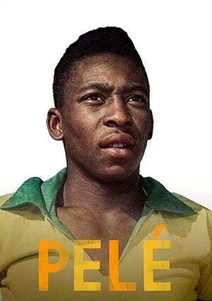
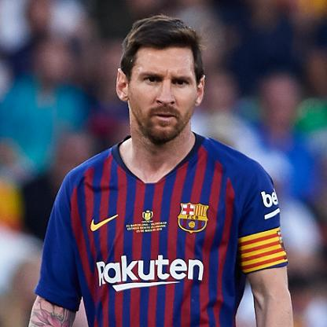

TOP 3 Zawodników w Piłce Nożnej!


Cristiano Ronaldo, właśc. Cristiano Ronaldo dos Santos Aveiro (wym. [kɾɨʃtiˈɐnu ʁuˈnaɫdu]; ur. 5 lutego 1985 w Funchal) – portugalski piłkarz występujący na pozycji skrzydłowego lub napastnika we włoskim klubie Juventus F.C. oraz w reprezentacji Portugalii, której jest kapitanem .Według Forbesa w 2016 i 2017 piłkarz był najlepiej zarabiającym i najpopularniejszym sportowcem świata. Z hiszpańskim klubem, Cristiano, zdobył 15 trofeów; dwa mistrzostwa Hiszpanii, dwa Puchary Króla, dwa Superpuchary Hiszpanii, cztery puchary Ligi Mistrzów, dwa Superpuchary UEFA, a także trzy klubowe mistrzostwa świata. Z dorobkiem 450 goli jest najlepszym strzelcem w historii Realu Madryt. Mając na koncie 34 hat-tricki jest również rekordzistą La Liga pod tym względem.

#2 Pelé
Strona o Pelé
Pelé, właśc. Edson Arantes do Nascimento (ur. 23 października 1940 w Três Corações) – brazylijski piłkarz, jedyny trzykrotny mistrz Świata 1958, 1962 i 1970. Działacz sportowy, polityk, honorowy prezydent New York Cosmos, w latach 1995–1998 minister sportu Brazylii. Pelé z 12 bramkami jest na piątym miejscu listy najskuteczniejszych strzelców mistrzostw świata, zaraz po Miroslavie Klose (16 goli), Ronaldo (15 goli), Gerdzie Müllerze (14 goli) i Juście Fontaine (13 goli). Poza tym jest jedynym piłkarzem, który ze swoją drużyną aż trzykrotnie zdobywał Puchar Świata (1958, 1962, 1970). Karierę czynnego piłkarza zakończył mając na koncie 1281 goli i 1363 rozegranych meczów.

#3 LIONEL MESSI
Strona o Messim
Lionel Andrés Messi Cuccittini[1] (hiszpańska wymowa [ljoˈnel anˈdɾes ˈmesi]; ur. 24 czerwca 1987 w Rosario) – argentyński piłkarz występujący na pozycji napastnika w hiszpańskim klubie FC Barcelona, której jest kapitanem oraz w reprezentacji Argentyny, której także jest kapitanem. Srebrny medalista Mistrzostw Świata 2014, trzykrotny wicemistrz Copa América z 2007, 2015, 2016, brązowy medalista Copa América 2019 i złoty medalista Igrzysk Olimpijskich 2008. Najskuteczniejszy zawodnik w historii FC Barcelony i reprezentacji Argentyny.